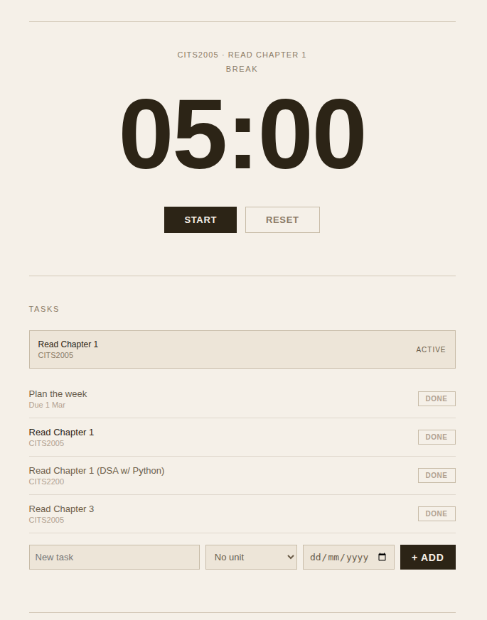
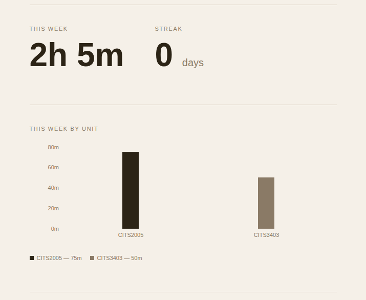

Uni-Grind: Study Tracker for University Students
A full-stack study tracker with a Pomodoro timer, live leaderboard, and weekly unit breakdown chart. Built and shipped solo, gaining over 1,500 visits and 500 unique visitors organically since launch.
Screenshots

Pomodoro Timer

Unit Breakdown Chart
Architecture
What I Built
Pomodoro Timer
Wall-clock based timer that records a start timestamp and calculates remaining time on every tick rather than decrementing a counter, keeping it accurate across background tabs, page switches, and device sleep.
Live Leaderboard
Aggregates study session totals across all users, filters by university, and resolves display names in a single batched query. Supports weekly and all-time views with an opt-out incognito mode stored in the user's profile.
Unit Breakdown Chart
Queries the last 7 days of sessions, groups minutes by unit tag, and renders a bar chart with Recharts. Gives students visibility into where their time actually goes each week.
Daily Streak
Calculates streaks by deduplicating session dates and comparing each against an expected consecutive day, correctly handling gaps and timezone offsets without any server-side cron job.
Real-time Presence
Shows a live count of users currently on the dashboard using Supabase Realtime presence channels. User IDs are deliberately excluded from the tracked payload to prevent exposure via browser dev tools.
Task Manager
Tasks are tagged to units and linked to study sessions on completion. Due dates are stored as Postgres date types and sorted client-side with null values pushed to the bottom to prioritise urgent work.
Technical Challenges
Timer Drift Across Background Tabs and Device Sleep
A naive setInterval approach caused the countdown to run seconds behind after backgrounding the tab, as browsers throttle intervals to save power. Fixed by storing a wall-clock start timestamp in localStorage and computing remaining time as startValue - elapsed on every tick. A visibilitychange event listener catches any remaining drift when the tab is re-focused, correcting the timer instantly.
Row-Level Security and Data Exposure
During a security review a friend discovered that without Postgres RLS policies, any authenticated user could query any other user's profile data including sensitive fields like enrolled units. Resolved by enabling RLS on all tables, writing per-operation policies scoped to auth.uid(), and creating a public_profiles view that exposes only the columns safe for public display. The leaderboard queries this view rather than the profiles table directly.
Session Backdating and Duration Manipulation
Without constraints, the insert endpoint accepted arbitrary created_at timestamps and inflated durations, making it trivial to game the leaderboard. Added a Postgres CHECK constraint capping session duration at 180 minutes and a second constraint rejecting timestamps older than one hour, with a NOT VALID flag to avoid re-checking existing rows on migration.
Want to see more?
Back to all projects